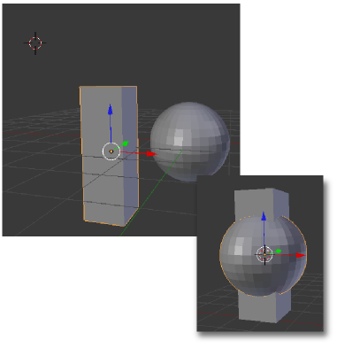

Selección a Cursor
El recién estudiado Cursor a seleccionado tiene una adherencia con la que hace un buen tándem para controlar la localización de objetos (no sólo el Cursor 3D); se trata de Selección a Cursor.
Si estamos en Modo Objeto  , con la secuencia de menú Objeto/Adherencia/Selección a Cursor, el objeto seleccionado se desplaza para que su origen coincida con el Cursor 3D.
, con la secuencia de menú Objeto/Adherencia/Selección a Cursor, el objeto seleccionado se desplaza para que su origen coincida con el Cursor 3D.
En Modo Edición  será el vértice o vértices los que se desplacen.
será el vértice o vértices los que se desplacen.
Con lo que sabes ahora sobre atracciones ¿Cómo resolverías aquel ejercicio que ya te planteamos sobre alineaciones de objetos?
Cómo alinear verticalmente estos dos objetos, para luego poder desplazarlos juntos garantizando esa propiedad.
Con los conocimientos que tenías por aquel entonces sólo podías usar las posibilidades de recolocación del Origen del cuadro Herramientas ("T").
¿Recuerdas la vieja solución?
- Seleccionamos el prisma en Modo Objeto
 , hacemos Origen/Origen al Cursor 3D y después Origen/Geometría al Origen.
, hacemos Origen/Origen al Cursor 3D y después Origen/Geometría al Origen.
- Repetimos lo mismo con la esfera.
- Seleccionamos los dos y nos los llevamos juntos al lugar donde sea necesario.
Pero conociendo las adherencias es mucho más sencillo...